Lecture 5: Deployment
Lecture by Josh Tobin.
Notes by James Le and Vishnu Rachakonda.
Published September 5, 2022.
Download slides.
Introduction
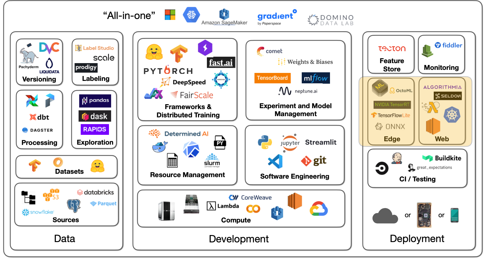
Deploying models is a critical part of making your models good, to begin with. When you only evaluate the model offline, it's easy to miss the more subtle flaws that the model has, where it doesn't actually solve the problem that your users need it to solve. Oftentimes, when we deploy a model for the first time, only then do we really see whether that model is actually doing a good job or not. Unfortunately, for many data scientists and ML engineers, model deployment is an afterthought relative to other techniques we have covered.
Much like other parts of the ML lifecycle, we'll focus on deploying a minimum viable model as early as possible, which entails keeping it simple and adding complexity later. Here is the process that this lecture covers:
-
Build a prototype
-
Separate your model and UI
-
Learn the tricks to scale
-
Consider moving your model to the edge when you really need to go fast
1 - Build a Prototype To Interact With
There are many great tools for building model prototypes. HuggingFace has some tools built into its playground. They have also recently acquired a startup called Gradio, which makes it easy to wrap a small UI around the model. Streamlit is another good option with a bit more flexibility.
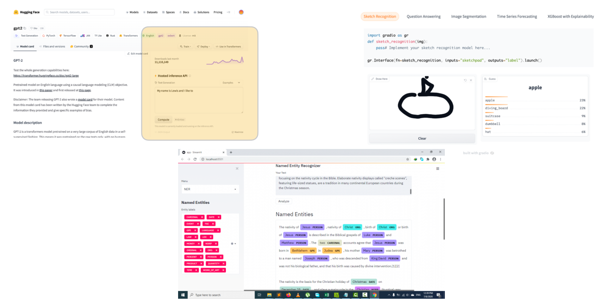
Here are some best practices for prototype deployment:
-
Have a basic UI: The goal at this stage is to play around with the model and collect feedback from other folks. Gradio and Streamlit are your friends here - often as easy as adding a couple of lines of code to create a simple interface for the model.
-
Put it behind a web URL: An URL is easier to share. Furthermore, you will start thinking about the tradeoffs you'll be making when dealing with more complex deployment schemes. There are cloud versions of Streamlit and HuggingFace for this.
-
Do not stress it too much: You should not take more than a day to build a prototype.
A model prototype won't be your end solution to deploy. Firstly, a prototype has limited frontend flexibility, so eventually, you want to be able to build a fully custom UI for the model. Secondly, a prototype does not scale to many concurrent requests. Once you start having users, you'll hit the scaling limits quickly.
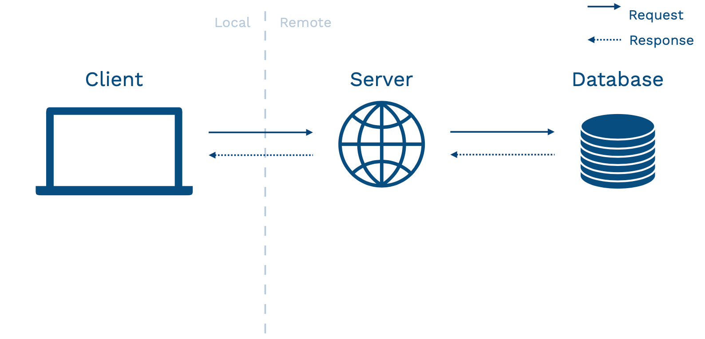
Above is an abstract diagram of how your application might look. The client is your user's device that interacts with your application. This device can be a browser, a vehicle, or a mobile phone. This device calls over a network to a server. The server talks to a database (where data is stored), used to power the application.
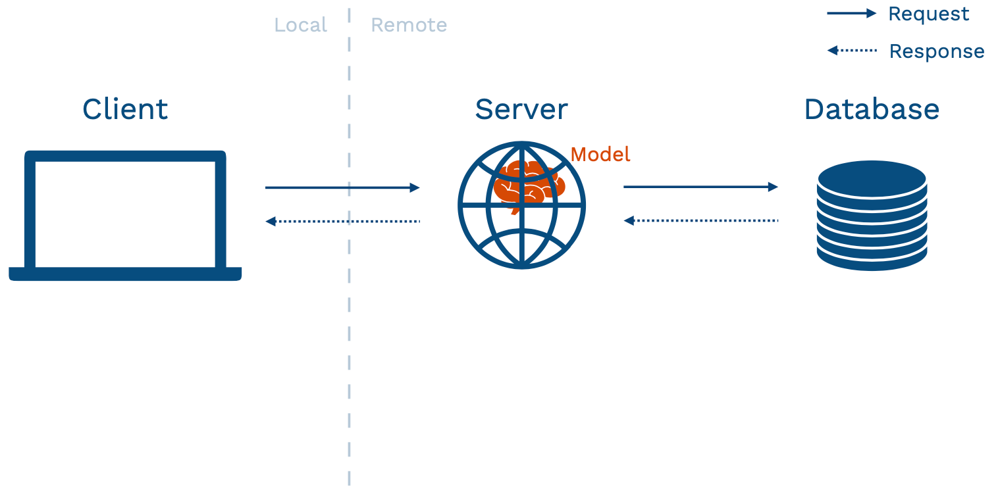
There are different ways of structuring your application to fit an ML model inside. The prototype approach mentioned in the beginning fits into the model-in-service approach - where your hosted web server has a packaged version of the model sitting inside it. This pattern has pros and cons.
The biggest pro is that if you are doing something complex, you get to reuse your existing infrastructure. It does not require you as a model developer to set up new things from scratch.
However, there is a number of pronounced cons:
-
Your web server may be written in a different language, so getting your model into that language can be difficult.
-
Models may change more frequently than server code (especially early in the lifecycle of building your model). If you have a well-established application and a nascent model, you do not want to redeploy the entire application every time that you make an update to the model (sometimes multiple updates per day).
-
If you have a large model to run inference on, you'll have to load that model on your web server. Large models can eat into the resources for your web server. That might affect the user experience for people using that web server, even if they are not interacting with the model.
-
Server hardware is generally not optimized for ML workloads. In particular, you rarely will have a GPU on these devices.
-
Your model and application may have different scaling properties, so you might want to be able to scale them differently.
2 - Separate Your Model From Your UI
2.1 - Batch Prediction
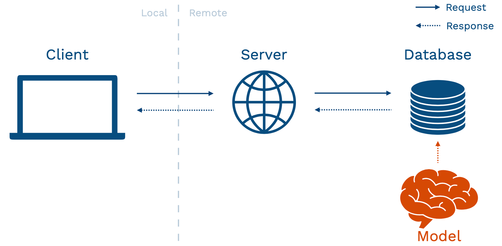
The first pattern to pull your model from your UI is called batch prediction. You get new data in and run your model on each data point. Then, you save the results of each model inference into a database. This can work well under some circumstances. For example, if there are not a lot of potential inputs to the model, you can re-run your model on some frequency (every hour, every day, or every week). You can have reasonably fresh predictions to return to those users that are stored in your database. Examples of these problems include the early stages of building recommender systems and internal-facing tools like marketing automation.
To run models on a schedule, you can leverage the data processing and workflow tools mentioned in our previous lecture on data management. You need to re-run data processing, load the model, run predictions, and store those predictions in your database. This is exactly a Directed Acyclic Graph workflow of data operations that tools like Dagster, Airflow, or Prefect are designed to solve. It's worth noting that there are also tools like Metaflow that are designed more for ML or data science use cases that might be potentially even an easier way to get started.
Let's visit the pros and cons of this batch prediction pattern. Starting with the pros:
-
Batch prediction is simple to implement since it reuses existing batch processing tools that you may already be using for training your model.
-
It scales very easily because databases have been engineered for decades for such a purpose.
-
Even though it looks like a simple pattern, it has been used in production by large-scale production systems for years. This is a tried-and-true pattern you can run and be confident that it'll work well.
-
It is fast to retrieve the prediction since the database is designed for the end application to interact with.
Switching to the cons:
-
Batch prediction doesn't scale to complex input types. For instance, if the universe of inputs is too large to enumerate every single time you need to update your predictions, this won't work.
-
Users won't be getting the most up-to-date predictions from your model. If the feature that goes into your model changes every hour, minute, or subsecond, but you only run your batch prediction job every day, the predictions your users see might be slightly stale.
-
Models frequently become "stale." If your batch jobs fail for some reason, it can be hard to detect these problems.
2.2 - Model-as-Service
The second pattern is called model-as-service: we run the model online as its own service. The service is going to interact with the backend or the client itself by making requests to the model service and receiving responses back.
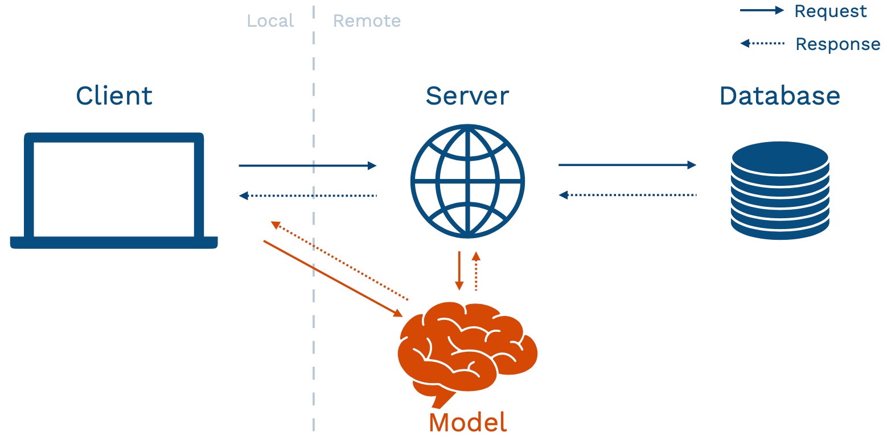
The pros of this pattern are:
-
Dependability - model bugs are less likely to crash the web application.
-
Scalability - you can choose optimal hardware for the model and scale it appropriately.
-
Flexibility - you can easily reuse a model across multiple applications.
The cons of this pattern are:
-
Since this is a separate service, you add a network call when your server or client interacts with the model. That can add latency to your application.
-
It also adds infrastructural complexity because you are on the hook for hosting and managing a separate service.
Even with these cons, the model-as-service pattern is still a sweet spot for most ML-powered products since you really need to be able to scale independently of the application in most complex use cases. We'll walk through the basic components of building your model service - including REST APIs, dependency management, performance optimization, horizontal scaling, rollout, and managed options.
REST APIs
Rest APIs serve predictions in response to canonically-formatted HTTP requests. There are other alternative protocols to interact with a service that you host on your infrastructures, such as GRPC (used in TensorFlow Serving) and GraphQL (common in web development but not terribly relevant to model services).
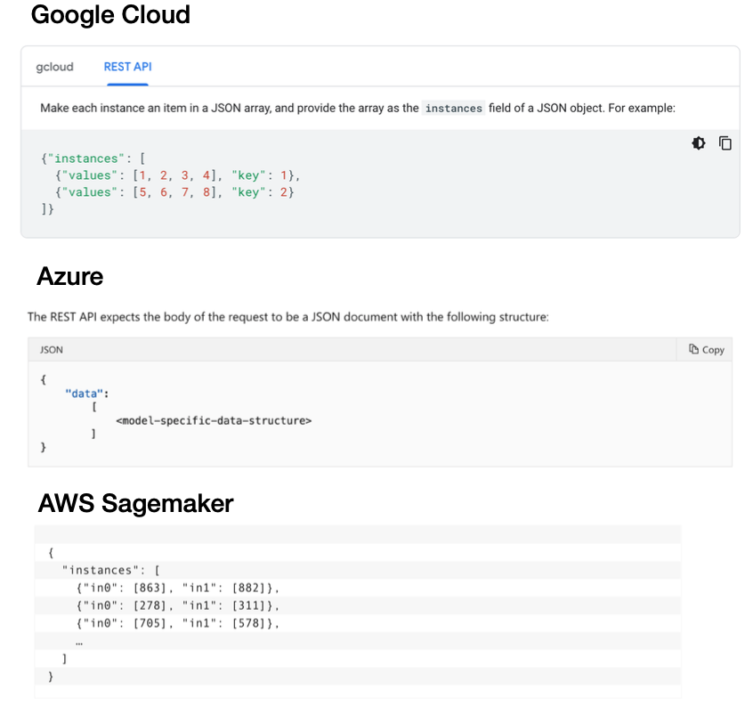
Unfortunately, there is currently no standard for formatting requests and responses for REST API calls.
-
Google Cloud expects a batch of inputs structured as a list called "instances" (with keys and values).
-
Azure expects a list of things called "data", where the data structure itself depends on what your model architecture is.
-
AWS Sagemaker expects instances that are formatted differently than they are in Google Cloud.
Our aspiration for the future is to move toward a standard interface for making REST API calls for ML services. Since the types of data that you might send to these services are constrained, we should be able to develop a standard as an industry.
Dependency Management
Model predictions depend on code, model weights, and dependencies. In order for your model to make a correct prediction, all of these dependencies need to be present on your web server. Unfortunately, dependencies are a notorious cause of trouble as it is hard to ensure consistency between your development environment and your server. It is also hard to update since even changing a TensorFlow version can change your model.
At a high level, there are two strategies for managing dependencies:
-
Constrain the dependencies for your model by saving your model in an agnostic format that can be run anywhere.
-
Use containers to constrain the entire inference program.
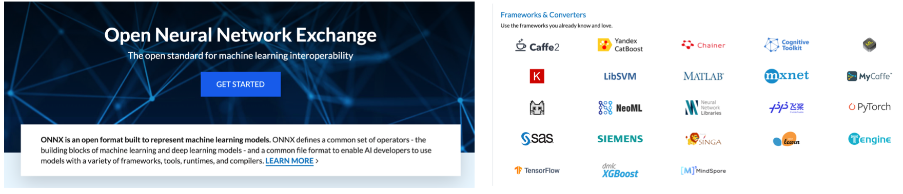
Constraining Model Dependencies
The primary way to constrain the dependencies of just your model is through a library called ONNX - the Open Neural Network Exchange. The goal of ONNX is to be an interoperability standard for ML models. The promise is that you can define a neural network in any language and run it consistently anywhere. The reality is that since the underlying libraries used to build these models change quickly, there are often bugs in the translation layer, which creates even more problems to solve for you. Additionally, ONNX doesn't deal with non-library code such as feature transformations.
Containers
To understand how to manage dependencies with containers, we need to understand the differences between Docker and Virtual Machines, how Docker images are built via Docker files and constructed via layers, the ecosystem around Docker, and specific wrappers around Docker that you can use for ML.
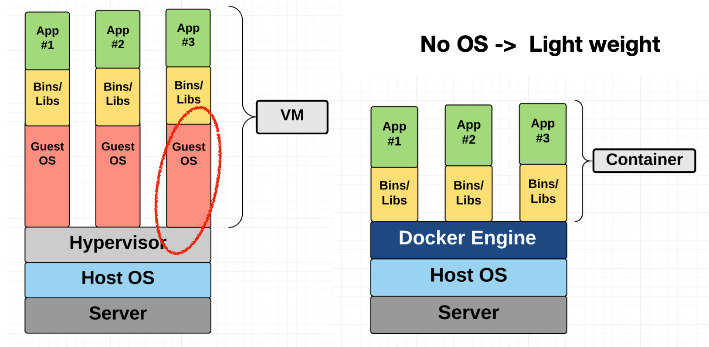
In a virtual machine, you package up the entire operating system (OS) as well as the libraries and applications that are built on top of that OS. A virtual machine tends to be very heavyweight because the OS itself has a lot of code and is expensive to run. A container such as Docker removes that need by packaging the libraries and applications together. A Docker engine that runs on top of your OS knows how to virtualize the OS and run the libraries/applications.
By virtue of being lightweight, Docker is used differently than how Virtual Machines were used. A common pattern is to spin up a new Docker container for every discrete task. For example, a web application might have four containers: a web server, a database, a job queue, and a worker. These containers are run together as part of an orchestration system.
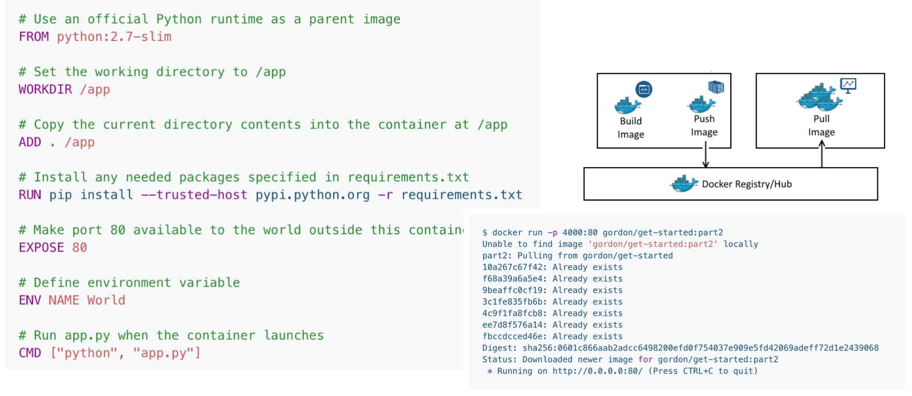
Docker containers are created from Docker files. Each Docker file runs a sequence of steps to define the environment where you will run your code. Docker also allows you to build, store, and pull Docker containers from a Docker Hub that is hosted on some other servers or your cloud. You can experiment with a code environment that is on your local machine but will be identical to the environment you deploy on your server.
Docker is separated into three different components:
-
The client is where you'll be running on your laptop to build an image from a Dockerfile that you define locally using some commands.
-
These commands are executed by a Docker Host, which can run on either your laptop or your server (with more storage or more performance).
-
That Docker Host talks to a registry - which is where all the containers you might want to access are stored.
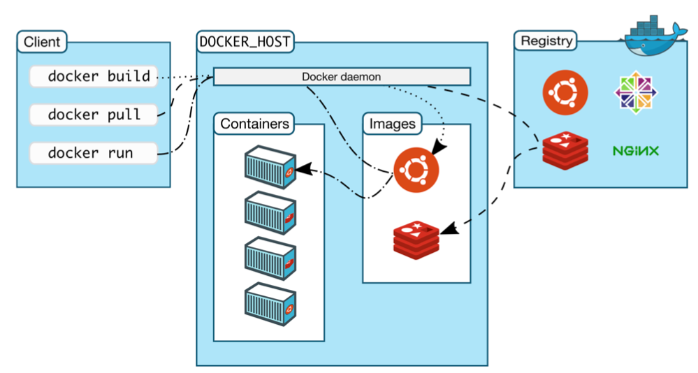
With this separation of concerns, you are not limited by the amount of compute and storage you have on your laptop to build, pull, and run Docker images. You are also not limited by what you have access to on your Docker Host to decide which images to run.
In fact, there is a powerful ecosystem of Docker images that are available on different public Docker Hubs. You can easily find these images, modify them, and contribute them back to the Hubs. It's easy to store private images in the same place as well. Because of this community and the lightweight nature of Docker, it has become incredibly popular in recent years and is ubiquitous at this point.
There is a bit of a learning curve to Docker. For ML, there are a few open-source packages designed to simplify this: Cog, BentoML, and Truss. They are built by different model hosting providers that are designed to work well with their model hosting service but also just package your model and all of its dependencies in a standard Docker container format.
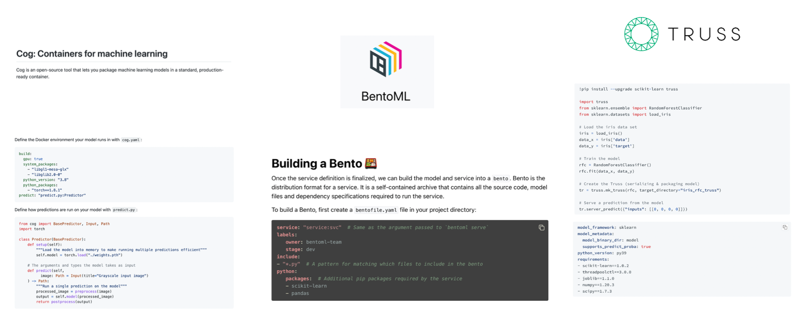
These packages have two primary components: The first one is a standard way of defining your prediction service. The second one is a YAML file that defines the other dependencies and package versions that will go into the Docker container running on your laptop or remotely.
If you want to have the advantages of using Docker for making your ML models reproducible but do not want to go through the learning curve of learning Docker, it's worth checking out these three libraries.
Performance Optimization
What about performance monitoring?
In this section, we focus on ways to improve the performance of your models, but we spend less time on how exactly that performance is monitored, which is a challenge in its own right.
Luckily, one of the student projects for the 2022 cohort, Full Stack Stable Diffusion, took up that challenge and combined NVIDIA's Triton Inference Server, the Prometheus monitoring tool, and the Grafana analytics dashboarding tool to monitor a robust, scalable, and observable deployment of Stable Diffusion models.
Check out the repo on GitHub here if you want to see a worked example of a fully-monitored DL-powered application.
To make model inference on your machine more efficient, we need to discuss GPU, concurrency, model distillation, quantization, caching, batching, sharing the GPU, and libraries that automate these tasks for you.
GPU or no GPU?
There are some advantages to hosting your model on a GPU:
-
It's probably the same hardware you train your model on, to begin with. That can eliminate any lost-in-translation issues.
-
As your model gets big and your techniques get advanced, your traffic gets large. GPUs provide high throughput to deal with that.
However, GPUs introduce a lot of complexity:
-
They are more complex to set up.
-
They are more expensive.
As a result, just because your model is trained on a GPU does not mean that you need to actually host it on a GPU in order for it to work. In the early version of your model, hosting it on a CPU should suffice. In fact, it's possible to get high throughput from CPU inference at a low cost by using some other techniques.
Concurrency
With concurrency, multiple copies of the model run in parallel on different CPUs or cores on a single host machine. To do this, you need to be careful about thread tuning. There's a great Roblox presentation on how they scaled BERT to serve a billion daily requests, just using CPUs.
Model Distillation
With model distillation, once you have a large model that you've trained, you can train a smaller model that imitates the behavior of your larger one. This entails taking the knowledge that your larger model learned and compressing that knowledge into a much smaller model that you may not have trained to the same degree of performance from scratch. There are several model distillation techniques pointed out in this blog post. They can be finicky to do by yourself and are infrequently used in practice. An exception is distilled versions of popular models (such as DistilBERT).
Quantization
With quantization, you execute some or potentially all of the operations in your model in a lower fidelity representation of the numbers that you are doing the math. These representations can be 16-bit floating point numbers or 8-bit integers. This introduces some tradeoffs with accuracy, but it's worth making these tradeoffs because the accuracy you lose is limited relative to the performance you gain.
The recommended path is to use built-in quantization methods in PyTorch and TensorFlow. More specifically, HuggingFace Optimum is a good choice if you have already been using HuggingFace's pre-trained models. You can also run quantization-aware training, which often results in higher accuracy.
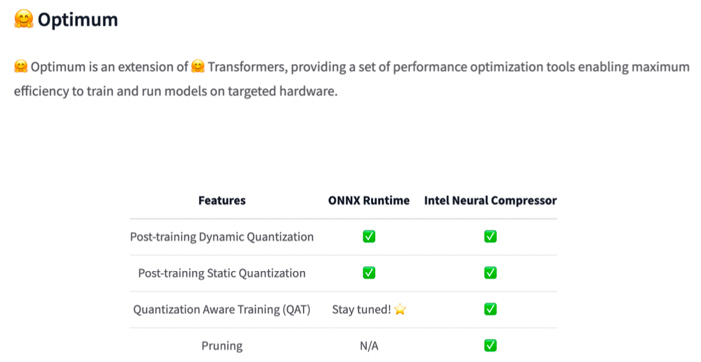
Caching
With caching, you realize that for some ML models, some inputs are more common than others. Instead of always calling the model every time a user makes a request, let's store the common requests in a cache. Then, let's check that cache before running an expensive operation. Caching techniques can get fancy, but the basic way of doing this is to use functools library in Python.
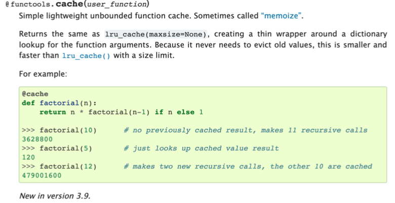
Batching
With batching, you take advantage of the fact that ML models often achieve a higher throughput when doing prediction in parallel, especially in a GPU. To accomplish this, you need to gather predictions until you have a batch, run those predictions, and return them to your user. You want to tune the batch size that deals optimally with the latency-throughput tradeoff. You also need to have a way to shortcut the process if latency becomes too long. Batching is complicated to implement, so you probably do not want to implement this yourself.
Sharing the GPU
Your model may not take up all of the GPU memory with your inference batch size. Why don't you run multiple models on the same GPU? This is a place where you want to use a model serving solution that supports GPU sharing out of the box.
Libraries
There are offerings from TensorFlow, PyTorch, and third-party tools from NVIDIA and Anyscale. NVIDIA's choice is probably the most powerful but can be difficult to get started with. Starting with Anyscale's Ray Serve may be an easier way to get started.
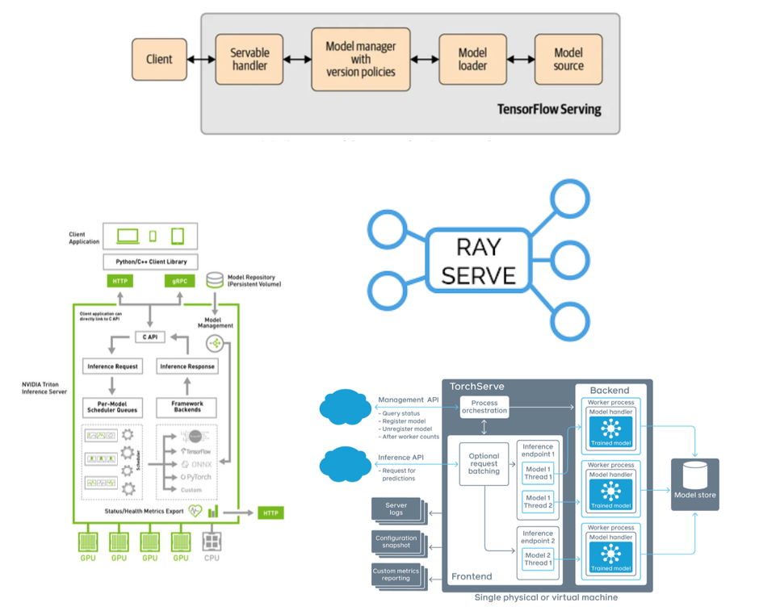
Horizontal Scaling
If you're going to scale up to a large number of users interacting with your model, it's not going to be enough to get the most efficiency out of one server. At some point, you'll need to scale horizontally to have traffic going to multiple copies of your model running on different servers. This is called horizontal scaling. This technique involves taking traffic that would usually go to a single machine and splits across multiple machines.
Each machine has a copy of the service, and a tool called a load balancer distributes traffic to each machine. In practice, there are two ways to do this: with either container orchestration (e.g. Kubernetes) or serverless (e.g. AWS Lambda).
Container Orchestration
In container orchestration, we use Kubernetes to help manage containerized applications (in Docker containers, for example) and run them across machines.
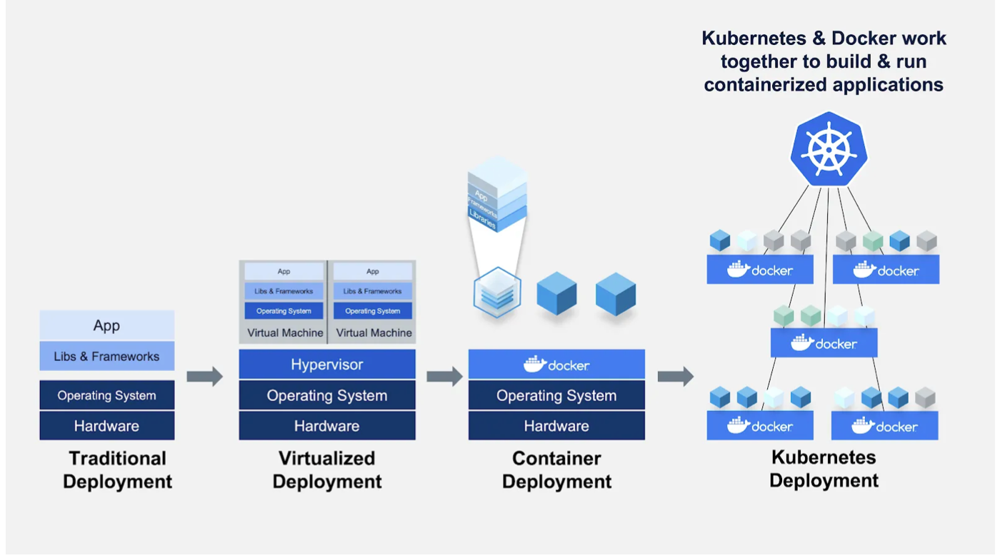
Kubernetes is quite interesting, but it's probably overkilled to learn too much about it if your only goal is to deploy machine learning models. There are a number of frameworks that make it easiest to deploy ML models with Kubernetes, including Kubeflow, Seldon, etc.
Serverless
If Kubernetes isn't the path for you (e.g. you don't want to have to worry about infrastructure at all), serverless is another option for deploying models. In this paradigm, app code and dependencies are packaged into .zip files or Docker containers with a single entry point function, which is a single function (e.g. model.predict()) that will be run repeatedly. This package is then deployed to a service like AWS Lambda, which almost totally manages the infrastructure required to run the code based on the input. Scaling to thousands of requests and across multiple machines is taken care of by these services. In return, you pay for the compute time that you consume.
Since model services tend to run discretely and not continuously (like a web server), serverless is a great fit for machine learning deployment.
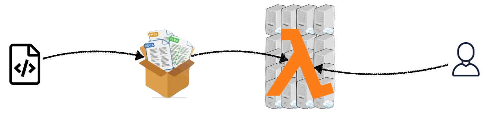
Start with serverless! It's well worth the time saved in managing infrastructure and dealing with associated challenges. There are still some problems you should be aware of though.
-
First, the size of the actual deployment package that can be sent to a serverless service tends to be limited, which makes large models impossible to run.
-
Second, there is also a cold start problem. If there is no traffic being sent to the service in question, the service will "wind down" to zero compute use, at which point it takes time to start again. This lag in starting up upon the first request to the serverless service is known as the "cold start" time. This can take seconds or even minutes.
-
Third, it can be hard to actually build solid software engineering concepts, like pipelines, with serverless. Pipelines enable rapid iteration, while serverless offerings often do not have the tools to support rapid, automated changes to code of the kind pipelines are designed to do.
-
Fourth, state management and deployment tooling are related challenges here.
-
Finally, most serverless functions are CPU only and have limited execution time. If you need GPUs for inference, serverless might not be for you quite yet. There are, however, new offerings like Banana and Pipeline that are seeking to solve this problem of serverless GPU inference!
Model Rollouts
If serving is how you turn a model into something that can respond to requests, rollouts are how you manage and update these services. To be able to make updates effectively, you should be able to do the following:
-
Roll out gradually: You may want to incrementally send traffic to a new model rather than the entirety.
-
Roll back instantly: You may want to immediately pull back a model that is performing poorly.
-
Split traffic between versions: You may want to test differences between models and therefore send some traffic to each.
-
Deploy pipelines of models: Finally, you may want to have entire pipeline flows that ensure the delivery of a model.
Building these capabilities is a reasonably challenging infrastructure problem that is beyond the scope of this course. In short, managed services are a good option for this that we'll now discuss!
Managed Options
All of the major cloud providers offer their managed service options for model deployment. There are a number of startups offering solutions as well, like BentoML or Banana.
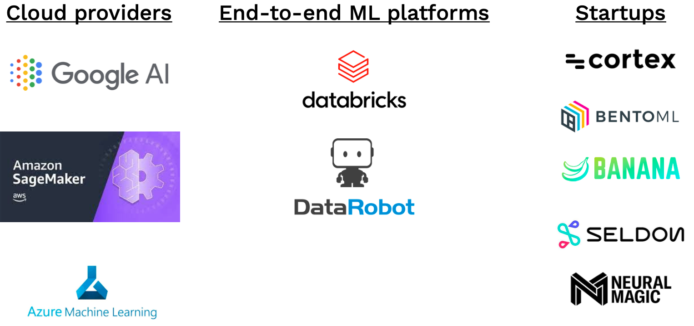
The most popular managed service is AWS Sagemaker. Working with Sagemaker is easier if your model is already in a common format like a Huggingface class or a SciKit-Learn model. Sagemaker has convenient wrappers for such scenarios. Sagemaker once had a reputation for being a difficult service to work with, but this is much less the case for the clear-cut use case of model inference. Sagemaker, however, does have real drawbacks around ease of use for custom models and around cost. In fact, Sagemaker instances tend to be 50-100% more expensive than EC2.
2.3 - Takeaways
To summarize this section, remember the following:
-
You probably don't need GPU inference, which is hard to access and maintain. Scaling CPUs horizontally or using serverless can compensate.
-
Serverless is probably the way to go!
-
Sagemaker is a great way to get started for the AWS user, but it can get quite expensive.
-
Don't try to do your own GPU inference; use existing tools like TFServing or Triton to save time.
-
Watch out for new startups focused on GPU inference.
3 - Move to the Edge?
Let's now consider the case of moving models out of web service and all the way to the "edge", or wholly on-device. Some reasons you may need to consider this include a lack of reliable internet access for users or strict data security requirements.
If such hard and fast requirements aren't in place, you'll need to take into account the tradeoff between accuracy and latency and how this can affect the end-user experience. Put simply, if you have exhausted all options to reduce model prediction time (a component of latency), consider edge deployment.
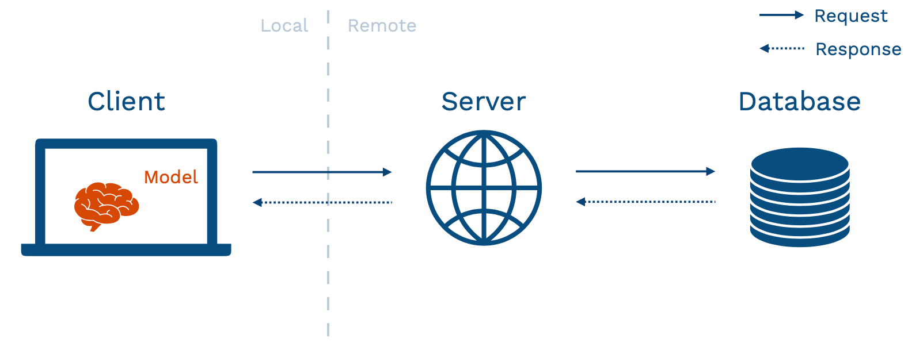
Edge deployment adds considerable complexity, so it should be considered carefully before being selected as an option. In edge prediction, model weights are directly loaded on our client device after being sent via a server (shown above), and the model is loaded and interacted with directly on the device.
This approach has compelling pros and cons:
-
Some pros to particularly call out are the latency advantages that come without the need for a network and the ability to scale for "free," or the simple fact that you don't need to worry about the challenges of running a web service if all inference is done locally.
-
Some specific cons to call out are the often limited hardware and software resources available to run machine learning models on edge, as well as the challenge of updating models since users control this process more than you do as the model author.
3.1 - Frameworks
Picking the right framework to do edge deployment depends both on how you train your model and what the target device you want to deploy it on is.
-
TensorRT: If you're deploying to NVIDIA, this is the choice to go with.
-
MLKit and CoreML: For phone-based deployment on either Android or iPhone, go with MLKit for the former and CoreML for the latter.
-
PyTorch Mobile: For compatibility with both iOS and Android, use PyTorch Mobile.
-
TFLite: A great choice for using TensorFlow in a variety of settings, not just on a phone or a common device.
-
TensorFlow JS: The preferred framework for deploying machine learning in the browser.
-
Apache TVM: A library agnostic, target device agnostic option. This is the choice for anyone trying to deploy to as diverse a number of settings as possible.
Keep paying attention to this space! There are a lot of startups like MLIR, OctoML, TinyML, and Modular that are aiming to solve some of these problems.
3.2 - Efficiency
No software can help run edge-deployed models that are simply too large; model efficiency is important for edge deployment! We previously discussed quantization and distillation as options for model efficiency. However, there are also network architectures specifically designed to work better in edge settings like MobileNets. MobileNets replace the more expensive computations typical of server-run models with simpler computations and achieve acceptable performance oftentimes.
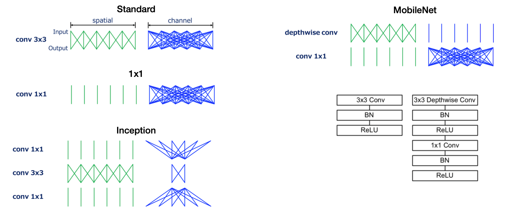
MobileNets are a great tool for model deployments and are a great case study in model efficiency. Another similarly great case study is DistillBERT.
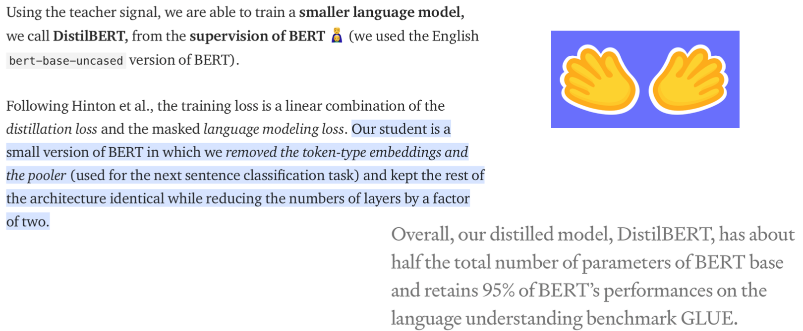
3.3 - Mindsets
As we wrap up this lecture, keep in mind the following mindsets as you consider edge deployment:
-
Start with the edge requirement, not the architecture choice. It's easy to pick a high-performing model architecture, only to then find it impossible to run on the edge device. Avoid this scenario at all costs! Tricks like quantization can account for up to 10x improvement, but not much more.
-
Once you have a model that works on the edge, you can iterate locally without too much additional re-deployment. In this case, make sure to add metrics around the model size and edge performance to your experiment tracking.
-
Treat tuning the model as an additional risk and test accordingly. With the immaturity of edge deployment frameworks, it's crucial to be especially careful when testing your model on the exact hardware you'll be deploying on.
-
Make sure to have fallbacks! Models are finicky and prone to unpredictable behavior. In edge cases, it's especially important to have easily available fallback options for models that aren't working.
3.4 - Conclusion
To summarize this section:
-
Web deployment is easier, so use edge deployment only if you need to.
-
Choose your framework to match the available hardware and corresponding mobile frameworks, or try Apache TVM to be more flexible.
-
Start considering hardware constraints at the beginning of the project and choose architectures accordingly.
We are excited to share this course with you for free.
We have more upcoming great content. Subscribe to stay up to date as we release it.
We take your privacy and attention very seriously and will never spam you. I am already a subscriber